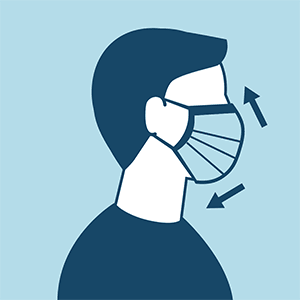

Masks are required on planes, buses, trains, and other forms of public transportation traveling. transportation hubs such as airports and stations. Travelers are not required to wear a mask in outdoor areas of a conveyance (like on a ferry or the top deck of a bus). CDC recommends that travelers who are not fully vaccinated continue to wear a mask and maintain physical distance when traveling.
Prevention
How long does the virus survive on surfaces?
The most important thing to know about coronavirus on surfaces is that they can easily be cleaned with common household disinfectants that will kill the virus. Studies have shown that the COVID-19 virus can survive for up to 72 hours on plastic and stainless steel, less than 4 hours on copper and less than 24 hours on cardboard. As, always clean your hands with an alcohol-based hand rub or wash them with soap and water. Avoid touching your eyes, mouth, or nose.
Fruits and vegetables are important components of a healthy diet. Wash them the same way you should do under any circumstance: before handling them, wash your hands with soap and water. Then, wash fruits and vegetables thoroughly with clean water, especially if you eat them raw.
When grocery shopping, keep at least 1-metre distance from others and avoid touching your eyes, mouth and nose. If possible, sanitize the handles of shopping trolleys or baskets before shopping. Once home, wash your hands thoroughly and also after handling and storing your purchased products. There is currently no confirmed case of COVID-19 transmitted through food or food packaging.

Wear a mask
- If you are not fully vaccinated and aged 2 or older, you should wear a mask in indoor public places.
- In areas with high numbers of COVID-19 cases, consider wearing a mask in crowded outdoor settings and for activities with close contact with others who are not fully vaccinated.
- If you are fully vaccinated and have a condition or are taking medications that weaken your immune system

Stay 6 feet away from others
Inside your home: Avoid close contact with people who are sick.
- If possible, maintain 6 feet between the person who is sick and other household members.
Outside your home: Put 6 feet of distance between yourself and people who don’t live in your household.
- Remember that some people without symptoms may be able to spread virus.
- Stay at least 6 feet (about 2 arm lengths) from other people.
- Keeping distance from others is especially important for people who are at higher risk of getting very sick.
Get Vaccinated
- Authorized COVID-19 vaccines can help protect you from COVID-19.
- You should get a COVID-19 vaccine when it is available to you.
- Once you are fully vaccinated, you may be able to start doing some things that you had stopped doing because of the pandemic.
Avoid crowds and poorly ventilated spaces
- Being in crowds like in restaurants, bars, fitness centers, or movie theaters puts you at higher risk for COVID-19.
- Avoid indoor spaces that do not offer fresh air from the outdoors as much as possible.
- If indoors, bring in fresh air by opening windows and doors, if possible.
Wash your hands often
Wash your hands often with soap and water for at least 20 seconds especially after you have been in a public place, or after blowing your nose, coughing, or sneezing.
- If soap and water are not readily available, use a hand sanitizer that contains at least 60% alcohol. Cover all surfaces of your hands and rub them together until they feel dry.
- Avoid touching your eyes, nose, and mouth with unwashed hands.
Cover coughs and sneezes
If you are wearing a mask: You can cough or sneeze into your mask. Put on a new, clean mask as soon as possible and wash your hands.
If you are not wearing a mask:
- Always cover your mouth and nose with a tissue when you cough or sneeze, or use the inside of your elbow and do not spit.
- Throw used tissues in the trash.
Immediately wash your hands with soap and water for at least 20 seconds. If soap and water are not readily available, clean your hands with a hand sanitizer that contains at least 60% alcohol.